Release notes
This table provides quick access to what's new in each version.
FSDA follows typical MATLAB timetable in the sense that there are two releases per year. The first typically in May/June and the second around October/November.
All up to date files are in the git public repository https://github.com/UniprJRC/FSDA
| Version (Release) | New Features and Changes | Released date. Fixed Bugs, Known Problems, Notes and Compatibility Consideration |
|---|---|---|
| >8.7.9.8 (2025b) | MULTIVARIATE
DATA In the biplot of PCA brush units with geographical data has been extended to shape files. For example, once a shape file is supplied to function pcaFS as follows: after clicking on Brush units in the biplot, once the units are selected in the biplot the associated shape file with the brushed units automatically appears on the screen  In the bitplotAPP Gui check box conf ell. has been added.  New option smartEVchart inside pcaFS which enables to visualize the equation of each PC, the ordered elements of the eigenvector in bar and line plot. For example the instruction produces the additional plot below for each PC.  New function pcaProjection which shows 1. A 3D scatterplot with the line associated with the 1st PC. 2. A 3D scatterplot with the principal line and orthogonal projections. 3. A 3D scatterplot with orthogonal projections onto the plane of the first 2 PCs. 4. A 3D scatterplot projections onto the first three PCs. 5. A 3D scatterplot with the principal ellipsoid in the projected coordinates space. 6. A 3D scatterplot with the principal ellipsoid in the original coordinates space. For example the code 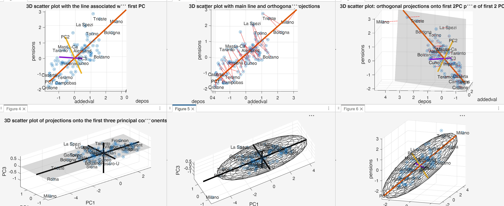 STATISTICAL UTILITIES New option plots has been added to grpstatsFS. If option plots is true now the 95 confidence
intervals (separated for each level of the grouping variable) are shown
on the screen.For example 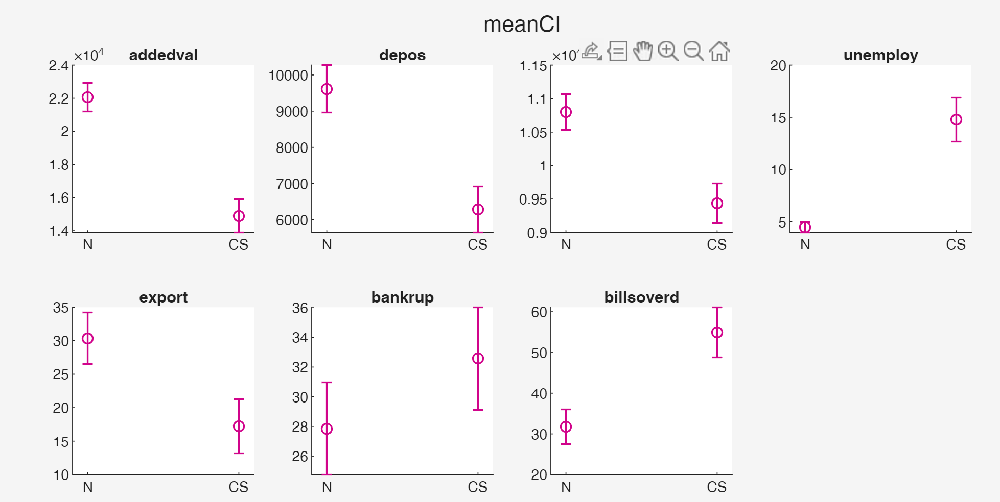 New function corrinv which computes the quantiles of the distribution of the sample correlation coefficient, given the sample size and the true correlation. Autocompletion has been added to this function 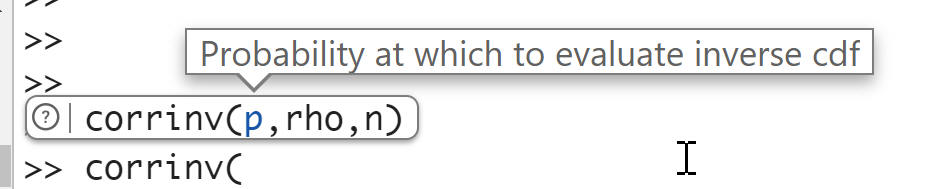 GRAPHICS New function polarhistogramFS which enables to compute the
polar histograms.For example the code 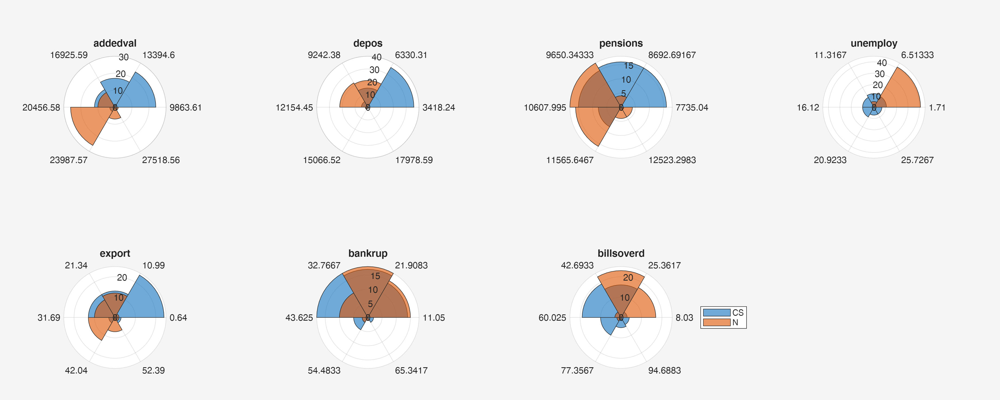 Note that the items in the legend are clickable so you can hide/show a particular group 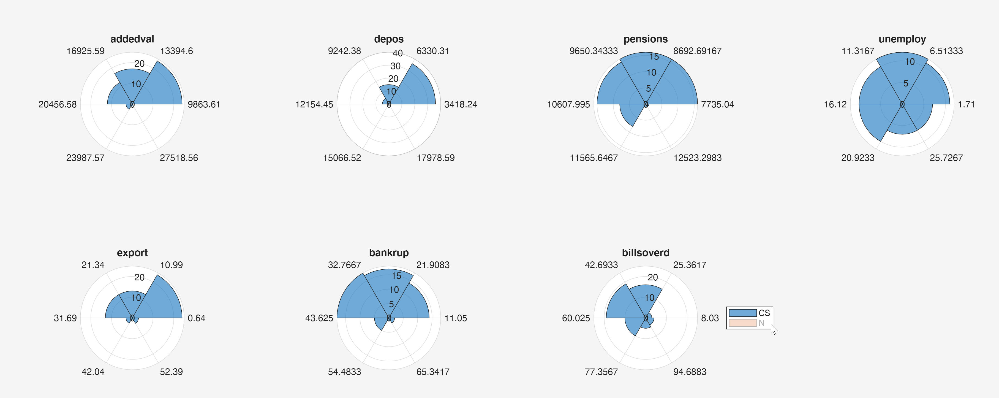 Autocompletion has been added to polarhistogramFS.UTILITIES New function tuna (toolbox update
notification alert) to test whether the most recent version of FSDA
has been installed. In the Command Window if you type tuna
, if the most recent version of FSDA has been installed something
like DATASETS New contingency tables housetasks, cinema and SportHearth added. |
December 2025 app biplotAPP was hardly readable with dark mode theme so thanks to the suggestion of Giacomo Boschi light theme has been forced. Function pcaProjeciton was inspired by a post of Matteo Zanetti Option smartEVchart and check box show ellipse have been suggested by Professor Paolo Mariani of the Univ. of Milan Oldest version of MATLAB which is supported is R2020b Bug fixes. Clickable multilegend issue fixed in prerelease R2026A In order to be able to brush units inside the biplot you need to have the image processing toolbox installed. In order to be able to see the labels of the units inside pcaProjection you need to have the Text analytic toolbox. |
|
V >8.7.8.2 2025a |
MULTIVARIATE
DATA New redesigned interactive biplot APP which is invoked calling pcaFS or directy through function biplotFS. 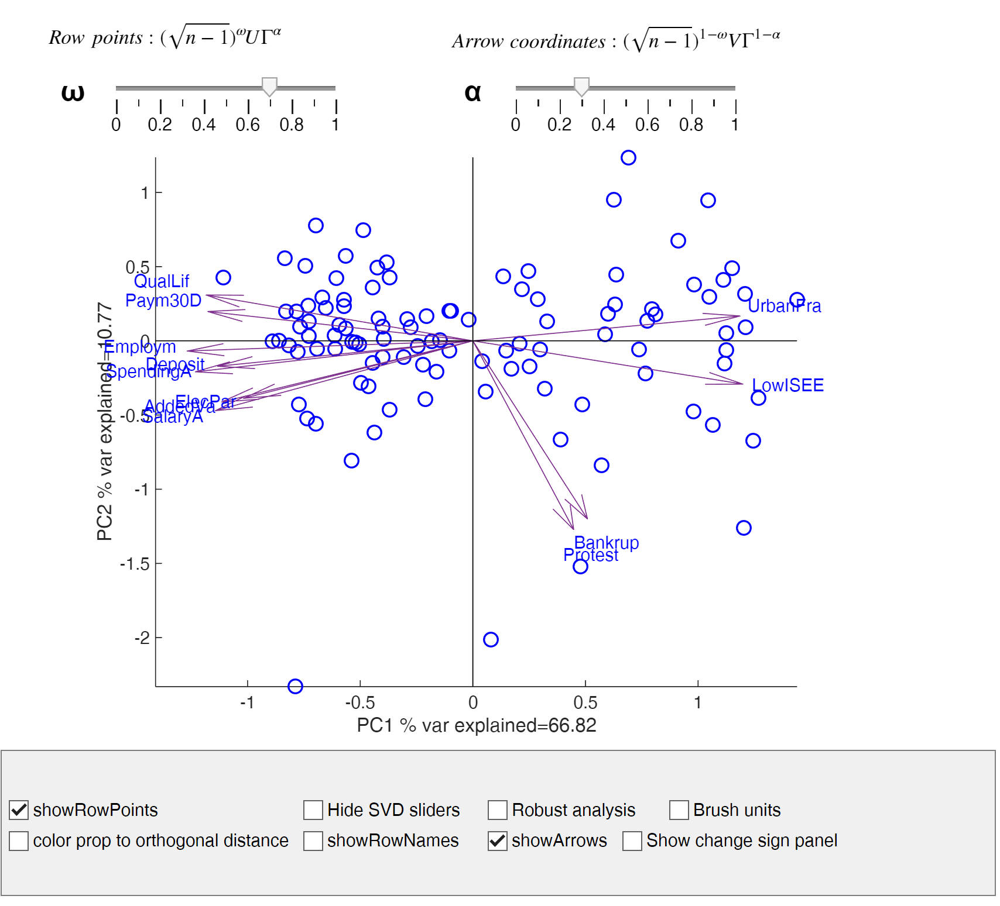 In this new version: 1) there is a button which enables to change the sign of the eigenvectors and visualize the result in the biplot and in the plot of the correlations between variables and PCs. 2) there is a button which enables to hide/show the alpha and omega sliders 3) there is a button "robust" which enables to do outlier detection using the forward search or MCD using different levels of trimming. It is also possible to recompute interactively the loadings, the percentage of variance explained and the outlier map plot once the outliers have been removed. Once the robust button is selected it is possible to show a series of plots associated with the different estimators. 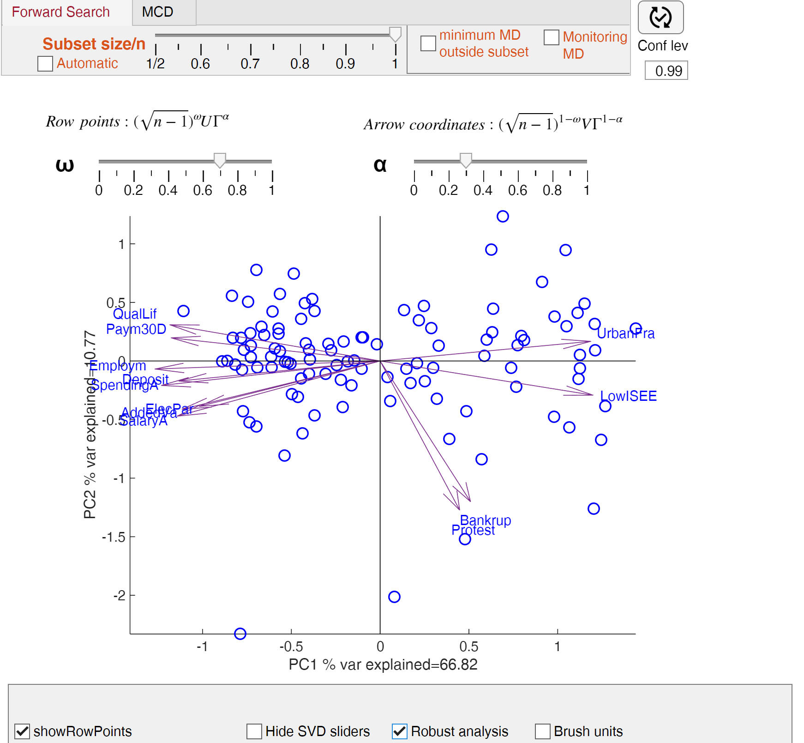 4) Now clicking on a point in the scatter of principal components there is a personalized datatip which enables us to see both the coordinates and the name of unit. 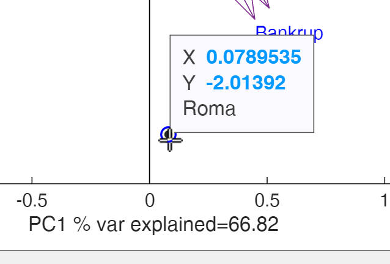 5) Now it is possible (in case that the units are geographical) to supply latitude and longitude. If latitude and longitude are supplied it is possible to see a geobubble where the size of the bubble depends on the first PC and the color depends on the second PC. 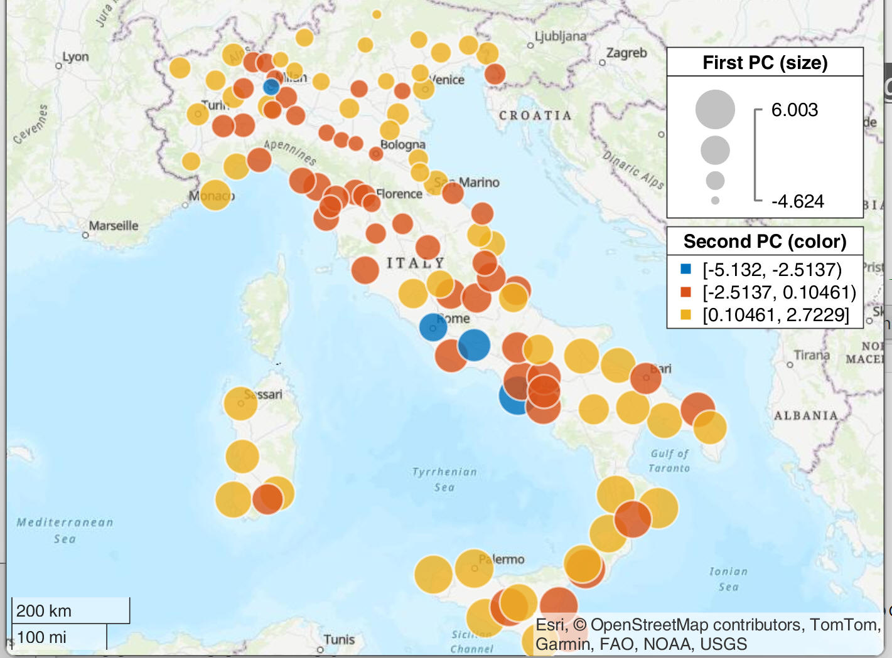 5) A new button "Brush units" has been added . If this button is clicked it is possible to select a rectangular region in the scatter of the principal components 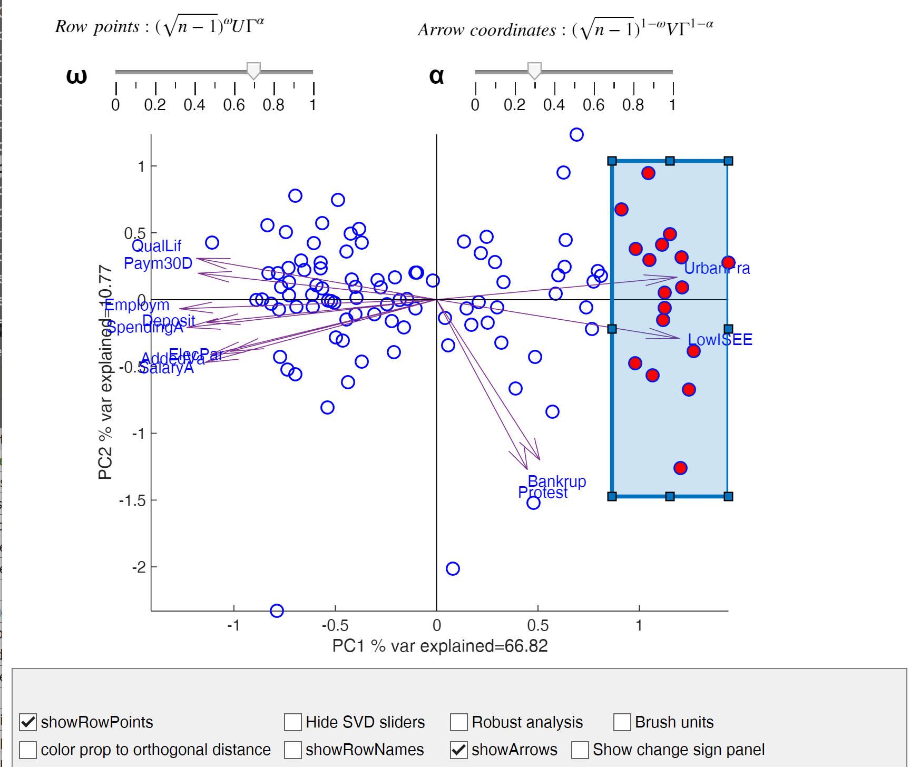 and the position of the units is automatically shown in the scatter plot matrix. 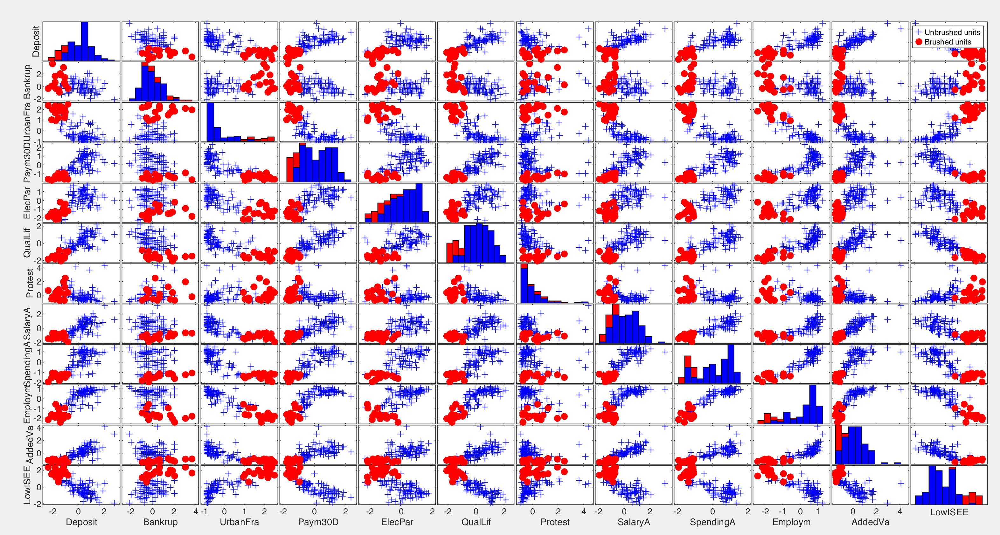 Moreover, if latitude and longitude are given in input e gobubble plot open automatically showing the geobubble just for the selected units. 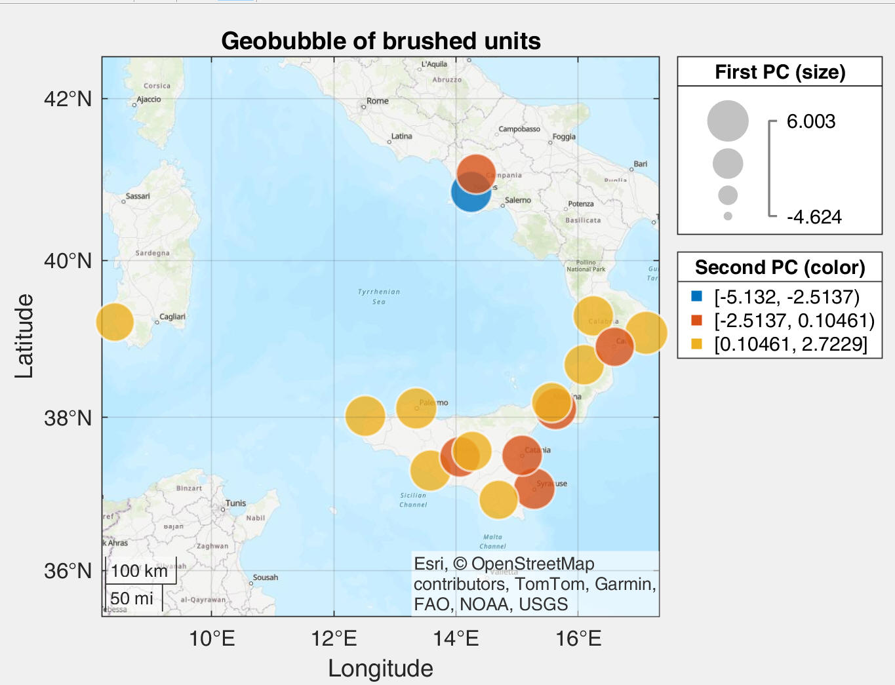 6) Support to Shape files. In case the geomapping toolbox is installed the user can supply a ShapeFile and an interactive APP which shows a geomap based on a particular principal component automatically opens. In this interactive geomap it is possible to revert the color order, to choose the map type, the specify the type of coordinates and to show/hide the labels of the units in the geoplot (note that to use this last option the geomapping toolbox must be installed). 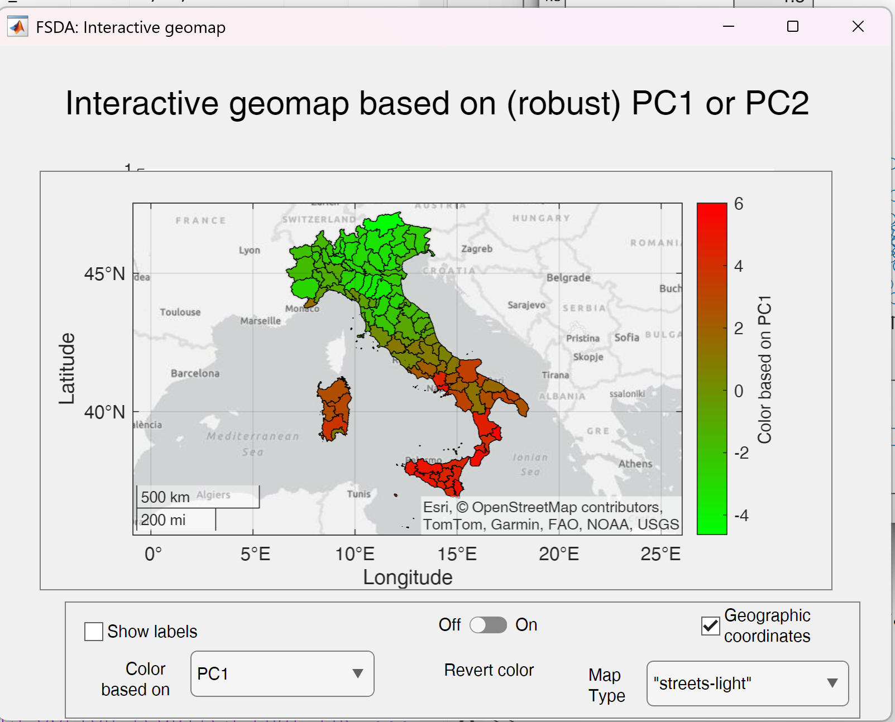 New APP called geoplotAPP which shows a geoplot where it is possible to specify the variable of the dataset for which the interactive geomap has to be built. The labels, the color revert, the map type and the type of geographical coordinates can be chosen. 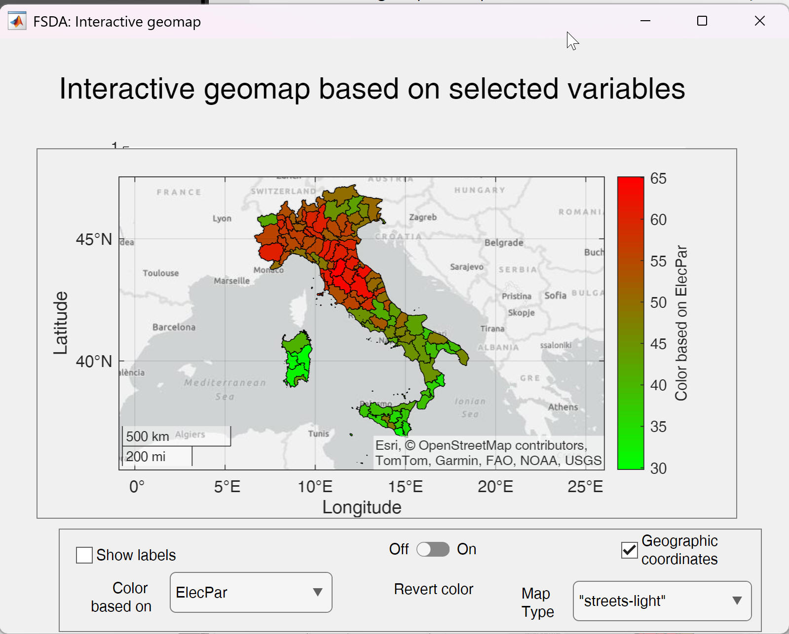 ANALYSIS OF CONTINGENCY TABLES Function corrNominal.now returns in output the contribution of the single cells of the contingency table to Chi2 (Chi2 index), Hyx (uncertainty coefficient of Theil), tauyx proportional reduction in variation of Goodmand and Kruskal. Function returns them both in array and table format. Function corrOrdinal.now returns in output the contribution of the single cells to the numerator of all the ordinal indexes (namely C-D). New option plots inside corrNominal and corrOrdinal. If plots is true, the contribution to the Chi2 statistics or to (C-D) are shown in a balloonplot and Pareto plot. The contributions have 2 colours depending on the sign of the residual, New option contrib2Index inside balloonplot. TRANSFORMATIONS New option tukey1df inside function Score, ScoreYJ and FSRfan. If this option is true, the Tukey's one degree of freedom test for non additivity is computed and monitored. GRAPHICS New option order inside spmplot to improve the visualization by placing similar variables next to each other. New option inside typespm of spmplot which enables to show instead of the scatters colored numbers of the correlation coefficient depending on the value (see for example image below) 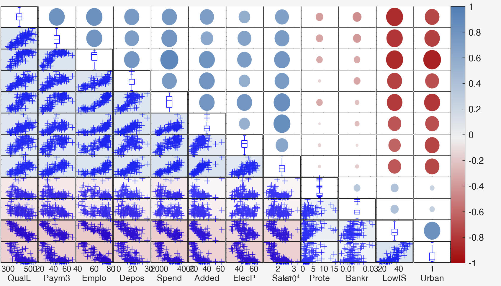 |
April 2025 In order to homogenize the output of FSR, FSRB, FSRH and FSM with that of the other estimators when no unit is declared as outlier inside output structure out, field outliers is returned as a missing. Before out.outliers was returned as a scalar NaN when no outlier was present. Oldest version of MATLAB which is supported is R2020a Old function fanplot is deleted because it is replaced by fanplotFS |
|
V 8.7.6.8 2024b |
MODEL SELECTION New routine univariatems which enables to exclude variables which are surely not significant. The step is preliminary to (robust) variable selection. ROBUST CENSORED REGRESSION New set of routines for censored regression (including transformations). All these routines contain inside file name the word "Cens". The tobit model is a particular case of censored regression. More specifically. New function regressCens for censored regression New function FSRedaCens to monitor the residuals in censored regression New function regressCensTra which computes the mle of transformation parameter and signed sqrt likelihood ratio test in the censored regression model New function FSRfanCens which monitors the signed sqrt root likelihood ratio test DATASETS New regression datasets, affairs and Esselunga TRANSFORMATION New option bsb in functions normYJ and normBoxCox DISTRIBUTIONS New functions tobitcdf, tobitpdf, tobitrnd and tobitinv which compute the cdf, pdf, random number generation and quantiles in the generalized tobit distribution REGRESSION New option exactR2 inside simulateLM GRAPHICS New option h to fanplotFS in order to send the output figure to subplots DATASETS New dataset inttrade ANALYSIS OF CONTINGENCY TABLES New indexes added to corrNominal STATISTICAL UTILITIES New function grpstatsFS which extends function grpstat and shows the output in much better way. UTILITIES New function rows2varsFS which extends function rows2vars of MATLAB to reorient table or timetable. New function pdfprotect which protects pdf files against printing and copying content and can add a watermark diagonally on all pages of the manuscript. |
October 2024 In MATLAB 2024b when you access the documentation from an installed version of MATLAB, the documentation now opens in your system web browser. Previously, the documentation opened in the Help browser. In the previous versions of MATLAB we were using a script which automatically redirected to the Internet documentation of FSDA which is located at http://rosa.unipr.it/FSDA. Now this automatic redirection does not work anymore. Oldest version of MATLAB which is supported is R2019b Arguments blocks are introduced to validate the input Given that the behaviour of function legend has changed in 2024b function clikablemultilegend which enables to hide/show the groups interactively has been rewritten |
|
V 8.7.5.1 release 2024a |
GRAPHICS Function fanplotFS.m now accepts in input not only the output of FSReda and FSRaddt. but also the output of FSReda, Sregeda and MMregeda. fanplotFS can be used also to monitor the t-statistics coming from FS or S or MM regression. New option corres inside resfwdplot. If corres is true a 3 panel plot showing the correlations of adjacent residuals is added to the monitoring residual plot. New options colorBackground in spmplot in order to have a background color of each scatter which depends on the value of the correlation coefficient. New option typespm which enables the user to control how the lower (upper) part of the scatter plot matrix is shown. It is possible to replace the scatter with the correlation coefficients given as "circle", "square" "number". Finally it is also possible to suppress the scatter. avasmsplot now returns the handle to the big (invisible) axes framing the subaxes of the plot. New optional arguments in aceplot. Now it is possible to show just selected plots with or without the plot of the transformation for the explanatory variables. New optional arguments addxline, flabstep and multiPanel in fanplotFS New optional argument msg in FSRaddt REGRESSION Functions Sregeda, MMregeda, now also report the values of the t statistics of the regression coefficients. UTILITIES STAT New functions pivotCoord and pivotCoordInv to transform the data inro compute isometric logratio coordinates and viceversa. New function logfactorial to compute log(x!) with high precision where x is not necessarily an integer. DATASETS New regression datasets, D1, D2, D3, inttrade1, inttrade2, inttrade3, cement, air_pollution, valueadded and nci60, added. DISTRIBUTION New functions WNChygepdf, WNChygecdf, WNChygeinv, WNChygernd, FNChygepdf, FNChygecdf, FNChygeinv, FNChygernd for the extended hypergeometric distribution. All the functions which start with WNC refer to the Wallenius non central hypergeometric distribution, while all the functions which start with FNC refer to the Fisher non central hypergeometric distribution. New functions mWNChygepdf, mWNChygernd, mFNChygepdf, mFNChygernd to compute the density and to generate random number from the multivariate Wallenius and multivariate Fisher non central hypergeometirc distribution. All these functions are a translation from C++ of the routines of Fog (2008), library BiasedUrn. VOLATILITY A collection of routines 1) to compute the integrated variance from a diffusion process via the Fourier estimator using Dirichlet or Fejer kernel; 2) to computes the integrated variance, quarticity, leverage of a diffusion process via the Fourier-Malliavin estimator (routines written by S. Sanfelici and Toscano, G. (2024) . MULTIVARIATE Functions for robust correspondence analysis completely redesigned mcdCorAna (mcd in correspondence analysis), FSCorAna (automatic outlier detection based on the Forward Search) and FSCorAnaenv (envelope creation of minimum Mahalanobis distance and inertia explained), FSCorAnaeda (FS in correspondence analysis with exploratory data analysis purposes). APPS CorAnaAPP which enables an interactive robust data analysis of the contingency tables |
April 2024 Oldest version of MATLAB which is supported is R2019a Function fanplot.m in order to avoid conflicts with function fanplot of the Financial Toolbox has been renamed fanplotFS.m. Old function fanplot.m has been left in the folder but it will be removed in a future release Function playbackdemoFS.m has been removed |
|
V 8.7.2.4 release 2023b |
REGRESSION New option DataVars inside FSRaddt which enables to select the variables for which t deletion tests have to be computed. New option DataVars inside aceplot which enables to select the variables for which g(X) again X has to be computed. New function forecastH which enables to plot the confidence bands for the hetereskedastic regression model. TRANSFORMATIONS New option highlight in functions fanplot which enables to highlight the step of entry of selected units. GRAPHICS Now fanplot also accepts as input the output of FSRaddt. Improved labelling inside add2yXplot. Now the labels are left or right aligned depending on their y coordinate. REGRESSION In functions Sreg, MMreg and MMregcore, Sregeda, MMregeda, Mscale and Taureg it is possible to specificy in option 'family' 'AS' (that is Andrew's sine link). STATISTICAL UTILITIES New function distribspec which extends MATLAB function normspec to any distribution. New Andrew's sine link for robust regression. The new functions which have been added are ASrho, ASpsi, ASpsider, ASpsix, ASbdp, ASeff and ASc DATASETS Added dataset about consumer loyalty in retail ConsLoyaltyRet CLUSTERING New function txmerge which performs a (hierarchical) merging of the inflated number of components found by tkmeans or tclust. |
April 2023- October 2023 DOCUMENTATION BUG FIXED If inside Home|Preferences the option "Documentation Location" is set to "Web", the FSDA help which is called is the one inside http://rosa.unipr.it/FSDA. If inside Home|Preferences the option "Documentation Location" is set to "Installed Locally", the FSDA help which is called is the one installed locally (during the first access to FSDA documentation html files are automatically copied inside docroot folder). This is for MATLAB versions 2021A-2023A. For previous MATLAB versions the documentation which is called is the local one. |
|
V 8.7.0.0 R 2023a |
REGRESSION Now function LTSts also accepts missing values in the response GRAPHICS New option Varnames in aceplot. New option showBars in avasms New function avasmsplot which enables: to display the solutions found using function avasms (model selection using robust avas). Using option databrush it is possible to see after interactive brushing to see the details of each solution. New options colorBackground and typespm in spmplot. MULTIVARIATE ANALYSIS New output in pcaFS: orthogonal distance from the principal component subspace, and score distance. A new plot which shows the orthogonal distance vs the score distance is also automatically produced. New input in pcaFS: using options bsb or bdp it is possible to have a robust estimate of the covariance matrix. New sliders and buttons in APP biplotAPP to show how the biplot changes varying breakdown point or subset size. HTML HELP DOCUMENTATION The new category "Probability distribution" has been created. This section contains the FSDA routines for correlation coefficient, inverse gamma, mixture of non central chi-square, Tweedie, Vervaat and Wallenius distribution DATASETS The description of the datasets (clustering, multivariate or regression) has been added inside the table. Now when a dataset in table format is loaded with DataSetName.Properties.Description it is possibile to see the description of the dataset. For example after: load geyser.mat the instruction geyser.Properties.Description enables to see the description. New datasets BigTradeEvents (section clsutering) and clothes33 (section multivariate) and leafpine (section regression) UTILITIES Function tabledisp in order to properly display a table or an array from the command line (for example with prespecified number of decimals) Function crosstab2datamatrix now produces in output also a table. json function signature definitions added to subfolder clustering which allow contextual help when calling FSDA functions GUIs New option inferential in GUIregress.m which shows the detailed calculations to compute t-statistics and confidence intervals. New option DiscreteData in GUImad.m New function GUIautocorr which shows the calculations to obtain the autocorrelation. |
December 2022-April 2023 Independently on the documentation location inside Home|Preferences the FSDA help which is called is the one inside http://rosa.unipr.it/FSDA. Oldest version of MATLAB which is supported is R2018a |
|
V 8.6.3 R 2022b |
CLUSTERING
DATASETS New datasets spam, crabs and USArrest added MULTIVARIATE DATASETS New dataset clothes added REGRESSION DATASETS New datasets P12119085full and P17049075full added REGRESSION New function LTStsLSmult to detect multiple level shifts added New field ARtentout in struct model inside LTSts added in order to replace lagged values with estimated values in presence of an autoregressive component. . |
December 2022 In order to visualize properly the HTML FSDA help files, it is necessary inside Preferences to select as Documentation Location "Installed Locally" in MATLAB Help Preferences. Oldest version of MATLAB which is supported is R2017b |
|
V 8.6.0 R 2022b |
DATASETS
New datasets kidney, melody and wholesale, added to the section clustering datasets. Description added to datasets inside the table format UTILITIES STAT New functions Mlocation and Mlocsca added. Mlocation performs M estimate of location in univariate samples. Mlocsca computes simultaneously estimate of location and scale. New function medcouple added. It is used to compute a robust skewness estimator. New functions corrpdf and corrcdf to compute the pdf and cdf of the sample correlation coefficient REGRESSION CLUSTERING tclustreg returns in output the value of the objective function for each subset after the concentration steps. forecastTS improved to cope with autoregressive component. Decomposition of forecasts into the different underlying components when input option plots is equal to 2. LTStsVarSel new option firstTestLS. GUIs New function GUIcorr added to show the calculations to compute the correlation coefficient |
November 2022 In order to visualize properly the HTML FSDA help files, it is necessary inside Preferences to select as Documentation Location "Installed Locally" in MATLAB Help Preferences. All functions (OPTrho, OPTpsi, OPTpsider, OPTwei, OPTpsix, have been rewritten using as input the intervals, [0 c2/3], [(2/3)c c], >c instead of the intervals [0 2c], [2c 3c], >3c Oldest version of MATLAB which is supported is R2017b |
|
V >8.5.26 R 2022b |
DATASETS New datasets kidney, melody and wholesale, added to the section clustering datasets. UTILITIES STAT New functions Mlocation and Mlocsca added. Mlocation performs M estimate of location in univariate samples. Mlocsca computes simultaneously estimate of location and scale. REGRESSION CLUSTERING tclustreg returns in output the value of the objective function for each subset after the concentration steps. |
October 2022 In order to visualize properly the HTML FSDA help files, it is necessary inside Preferences to select as Documentation Location "Installed Locally" in MATLAB Help Preferences. All functions (OPTrho, OPTpsi, OPTpsider, OPTwei, OPTpsix, have been rewritten using as input the intervals, [0 c2/3], [(2/3)c c], >c instead of the intervals [0 2c], [2c 3c], >3c |
|
V 8.5.26 R 2022a |
GRAPHICS New option PlotGroup in scatterboxplot.m Improved mdpattern with syncronized axes. New options plots.ColorMapLabelRows and plots.ColorMapLabelRows in CorAnaplot in order to have a colorbar or row or column labels depending on a particular variable such as the corresponding mass or the communaility. New function add2boxplot which enables to add outlier labels to an existing figure containing one or more boxplot
REGRESSION Added options rob, tyinitial, trapezoid, orderR2 and scail to avas. New function avasms, to automatically choose the best AVAS model. Added a series of options to avasms. A new graphical display to show the importance of the different options is shown in the output. DATASETS New datasets fish and Marketing_Data added to regression datasets. UTILITIES STAT New option standardize in function Powertra New functions quickselectFS_demo and quickselectFSw_demo which illustrate graphically with an animation the functioning of quickselectFS and quickselectFSw.
UTILITIES HELP Updated and improved function CreateFSDAtoolboxFile which automatizes all steps needed to create programmatically a toolbox (mltbx) file and github release New function setToolboxStartEnd, which can set release compatibility in ToolboxPackagingConfiguration.prj file.
CLUSTERING Improved version of ctlcurves with ordered solutions based on LR test New options startv1true1unitCentroid and priorSol added to tclust
GRAPHICS New options oneplot added to aceplot.m |
April 2022 In order to visualize properly the HTML FSDA help files, it is necessary inside Preferences to select as Documentation Location "Installed Locally" in MATLAB Help Preferences. |
|
V8.5.10 R 2021b |
ROBUST CLUSTERING Likelihood ratio test inside ctlcurves.m and extended output which automatically detects a set of candidate solutions.
GRAPHICS New function ctlcurvesplot.m to plot the output of the trimmed likelihood curves New function moonplot to show the output of correspondence analysis New function balloonplot to visualize large categorical data DATASETS New datasets oliveoil, wine and flea added to cluster analysis section. New datasets csdPerceptions and mobilephone added to the multivariate analysis section MULTIVARIATE ANALYSIS New function mcdeda which monitors the output of mcd for a sequence of values of breakdown point New option conflimMethodCramerV in function corrNominal to compute the confidence interval of Cramer V coefficient. New function mdpattern which finds and plots missing data patterns. REGRESSION New options inside AVAS to make it robust to the presence of outliers Sreg and MMreg with hyperbolic tangent estimator made faster. New options inside LTSts and simulateTS that allow a customized definition of the autoregressive component
UTILITIES Added weights in repDupValWithMean.m New function setdiffFS in case input arguments just contain positive integer values. |
October 2021 In a lot of functions the instruction coder.target('MATLAB') appears in order to cope with the MATLAB C coder requirements. Functions balloonplot and mdpattern use bubblechart routine and therefore only work with MATLAB 2020b or greater. |
| V8.5.4 R2021a |
MULTIVARIATE ANALYSIS New function pcaFS which enables to visualize both the percentage of variable explained by the different components, both the factor loadings and interactive dynmic biplot. New function biplotFS which enables to call the app biplotAPP which creates an interactive dynamic biplot.
Improvements in functions spmplot (now input can also be a table) and CorAna (now input can also be a table when optional option datamatrix is true) CORRESPONDENCE ANALYSIS A new suite of functions for robust correspondence analysis. Functions mcdCorAna, FSCorAnaeda, FSCorAnaenvmmd and mahalCorAna, extend functions mcd, FSMeda, FSMenvmmd and mahalFS to the context of contingency tables. The plots produced by functions malindexplot and malfwdplot have been modified to incorporate the output of these new functions.
GRAPHICS New function barVariableWidth which produces a bar plot with different widths and colors for each bar In functions mmdplot, mdrplot, mmdrsplot and mdrrsplot added the possibility of showing in output arguments the list of units brushed in each brushing operation Option tag added to FSR, FSRmdr, FSM, FSMmmd, FSRts, FSRB, FSRr and FSRH Option label added to malindexplot
ROBUST CLUSTERING newoption warmup in tclustICgpcm new option commonslope in tclustreg and tclustregeda and tclustregIC
DATASETS New dataset citiesItaly added to multivariate analysis section.
REGRESSION New options for VIOM and MSOM contamination inside function simulateLM
STATISTICAL UTILITIES Added a series of routines for the estimation of integrated and instantaneous variance of a diffusion process via Fourier analysis [M.E. Mancino, M.C. Recchioni, S. Sanfelici, ``Fourier-Malliavin Volatility Estimation. Theory and Practice'', 2017, Springer - New York] FE_int_vol, FE_int_vol_Fejer, FE_splot_vol, FE_spot_vol_FFT, CEVmodel, OptimalCuttingFrequency
GUIs A new set of functions which enable to monitor all the necessary steps to be done to obtain the main indexes of descriptve statistics. More in detail: GUIconcentration, GUImad.html, GUIpowermean.html, GUIquantile.html, GUIskewness.html, GUIstd.html, GUItrimmean.html, GUIvar.html, GUIcov.html, GUIregress.html
|
March 2021 Starting from MATLAB 2021a in order to view the FSDA html documentation it is necessary on the Home tab, in the Environment section, click Preferences. Select MATLAB > Help and change the Documentation Location. In this case select option "installed locally". Routines pcaFS and biplotFS assume that at least MATLAB 2019b is installed. We stop supporting releases before 2016a. |
| V8.3.0 (R2020b) |
TRANSFORMATIONS IN REGRESSION We have enriched the properties of the data transformations of the Yeo and Johnson (2000) for negative and positive responses, which we introduced in R2020a. More specifically, we intervened on the smoothness condition that the second derivative of zYJ(lambda) with respect to y be smooth at y = 0, along Atkinson et al (2019) and (2020), to allow two values of the transformations parameter: lambdaN for negative observations and lambdaP for non-negative ones. Now, function ScoreYJall computes: 1) a global t test associated with the constructed variable for lambda=lambdaP=lambdaN.2) a t test for positive observations. 3) a t test for negative observations. 4) a F test for the joint presence of the two constructed variables described in points 2) and 3. 5) the F test based on the maximum liklihood estimate of lambdaP and lambdaN New function ScoreYJall which computes the score tests described in points 1)-5) above. New function scoreYJmle which computes, in the case of extended Yeo and Johnson transformation, the likelihood ratio test of H0: lambdaP=lambdaP0 and lambdaN=lambdaNeg0. Added option usefmin in funtion boxcoxR. This option uses the solver (fminsearch or fminunc) to find MLE of the two transformation parameters for extended Yeo and Johnson family (Atkinson et al. 2020). New function fanBIC which takes in input the output of FSRfan and using BIC and smoothness index enables to automatically choose in an efficient and robust way, the best value of the transformation parameter. New function fanBICpn which enables to automatically choose the best values of the transformation parameters for positive and negative observations New function normYJpn which extends the companion functions normBoxCox and normYJ to the case of extended Yeo and Johnson transformation. TIME SERIES New function SETARX which implements Threshold autoregressive models with two regimes ROBUST CLUSTERING New tools for dealing with the 14 Gaussian parsimonious clustering models (GPCM). In function genSigmaGPCM new option pa.exactrestriction has been added. If pa.exactrestriction is true the covariance matrices are generated with the exact values of the restrictions specified in pa.cdet, pa.shw and pa.swb. In function MixSim optional input structure sph now can be called with field sph.exactrestriction In function tclust the fourth
input restrfactor can be a structure which can contain the type of Gaussian
Parsimonious Clustering Model - GPCM (restrfactor.pars), the New functions tclustICgpcm, tclustICsolGPCM, tclustICplotGPCM, and carbikeplotGPCM which extend functions tclustIC, tclustICsol, tclustICplot and carbikeplot to the case of the 14 GPCM. GRAPHICS New plots waterfallchart
(which implements the waterfall chart (see
https://en.wikipedia.org/wiki/Waterfall_chart)
and new function funnelchart which implements
the funnel chart (see new function scatterboxplot (which creates scatter diagram with marginal boxplots). Improvements to functions Now spmplot accepts as input a table. In the case the names of the tables are automatically added at the margins. Similarly, in function corrNominal when option datamatrix is true it is possible to supply as first argument a table.
DATASETS New datasets balancesheets and facemasks added in the datasets regression section and datasets clustering section respectively |
October
18th 2020 Mathworks search engine in our HTML web pages in version 2020b works again. Routines fanBICpn, tclustICgpcm and tclustICplot gpcm use routine heatmap introduced in MATLAB 2017a. Routine tclustregeda to display the results uses function parallelplot introduced in Matlab 2019a. We stop supporting releases before 2015b. Functions FSRfan, ScoreYJ and ScoreYJall made faster |
| V8.0 (R2020a) |
ROBUST REGRESSION New set of routines for minimum density power divergence estimators (mdpd, mdpdR, mdpdReda, PDrho, PDpsi, PDwei, PDpsider, PDpsix, PDbdp, PDeff, PDc ), discussed in https://www.mdpi.com/1099-4300/22/4/399) New function simulateLM to simulate linear regression data with prespecified value of R2, prespecified correlation among the explanatory variables and type of distribution. New function VIOM which computes weights estimates under a Variance-Inflation Outlier Model using MLE or Restricted MLE (REMLE). ROBUST CLUSTERING New function tclustregeda which enables to monitor the regression clustering classification for different levels of trimming. Improved function tclustregIC which enables to compute the BIC (and other information criteria) for different values of restriction factors and different number of groups, for classification or mixture likelihood and regression clustering. Modified function tclustICsol now accepts input from tclustregIC to show the yXplot of the best solutions. New function ctlcurves to select the appropriate number of groups in robust clustering. New function mdrrsplot which plots the random starts trajectories and enables to brush them. The companion function mmdrsplot referred to multivariate analysis has been improved.
TRANSFORMATIONS IN REGRESSION New function boxcoxR which
computes the profile log Likelihood for a range of values of the transforamtion
parameter (lambda) and computes the MLE of lambda in the DOCUMENTATION Improved menu for the automatic installation of the FSDA html help files. UTILITIES New function exactcdf for finding the exact cdf of each element in a vector x with respect to the empirical distribution, represented by another vector. New functions twdpdf and twdrnd to compute the pdf of the Tweedie distribution and generate random numbers from it.
|
We stop supporting releases
before 2015a. Functions PoolPrepare.m and PoolClose.m removed (not necessary with the latest releases of parallel computing toolbox). Cleaner code for tclust and tclultreg functions now available; the core part which computes the EM algorithm for each subset which is extracted, is now in tclustregcore.m and tcluscore.m; these two functions are internal and therefore undocumented. From this release we support older releases up to 2015a (however about 85% of the FSDA still runs with older versions of MATLAB up to 2012a). |
| V7.1 (R2019b) |
This is the first release which is distributed from Mathworks marketplace and from github platform. TRANSFORMATION IN REGRESSION New function tBothSides which enables to transform both sides of a (nonlinear) regression model. New function boxcoxR which finds MLE of lambda in linear regression (and confidence interval) using Box Cox or Yeo and Johnson family. ROBUST TIME SERIES ANALYSIS New functions LTStsVarSel.m which enables to perform variable selection in the robust time series model LTSts.m. In functions LTSts.m, simulateTS.m and forecastTS.m it is now possible to add an autoreressive component. UTILITIES New function existFS which checks whether a file exists and puts the answer in a cached persistent variable DOCUMENTATION Added file getting_started.mlx in subfolder doc of the main root of FSDA for packaging the FSDA toolbox,
|
From this release we support
old releases up to 2014b. Now functions tclust.m and logmvnpdfFS.m do
not need anymore the presence of MEX files. This modification has been
made necessary because at present Mathworks toolbox packaging does not
support mex files. |
| V7.0 (R2019a) |
CLUSTER ANALYSIS Function tclustreg has been considerably enhanced. Now the function includes: (i) robust BIC, (ii) possibility of constraining the determinants of the covariance matrices of the explanatory variables, (iii) options for treating datasets with concentrated noise, making use of concentration steps appropriately modified using observation weighting and thinning methods. New function tclustregIC which (if present) uses the Parallel Computing toolbox to compute robust BIC for mixture and classification likeilhood for different values of k (number of groups) and different values of c (restriction factor for the variances of the residuals), for a prespecified level of trimming. New function for constraining the determinants restrdeter. This function has its own interest but is called in every concentration step of function tclust in case determinant restriction is needed. Routines for constraining the determinants (restrdeterGPCM), the shape matrices (restrshapeGPCM) and to impose common rotation matrices (common principal components) in presense of equal shape (cpcE.m) or varying shape (cpcV.m) and a general routine to impose constraints in the family of the 14 Gaussian Parsimonious Clustering Models (restrSigmaGPCM). Routine to generate data based on the 14 Gaussian Parsimonious Clustering Models (genSigmaGPCM). This routine can be called directly from function MixSim in order to generate each of the 14 Gaussian Parsimonious Clustering Models with a prespecified level of overlap (see option sph inside MixSim). Routine GowerIndex to compute matrix of similarity indexes using Gower metric. DATASETS New datasets added to the collection: animals, P12119085, P17049075, fondi_large, JohnDraper data, gasoline data, ms212. See pages datasets_reg and datasets_mult for a description of these datasets. GRAPHICS Possibility of brushing using rownames. Rownames also appear in the associated scatter plot matrix, both for regression and multivariate analysis: se new examples in resfwdplot and malfwdplot. New function aceplot to visualize the results of the output produced by functions ace and avas. Option RowNamesLabels has been added to add2spm and to add2yX to label the units. MULTIVARITATE Funciton FSMeda is now much faster; the original function FSMeda has been kept, renamed FSMedaeasy, because the algorithm is much easier to follow. REGRESSION New functions: (i) ace which implements the alternating conditional expectations algorithm to find the transformations of y and X that maximise the proportion of variation in y explained by X and (ii) avas which uses a (nonparametric) variance-stabilizing transformation for the response variable. New function smothr to smooth values imposing variour constraints (e.g. monotonicity, circularity,..). This function calls the supersmoother routine of Friedman. New function rlssmo to compute a running line smoother with global cross validation. New function supsmu to smooth scatterplots using Friedman's supersmoother algorithm. Function RobCov now includes the estimator covrobc (a corrected version of the covariance matrix of robust beta coefficients). A new motivating example shows a case why covrobc should be always used. UTILITIES New function repDupValWithMean that enable to replace values of y including non unique elements in vector x with local means. UTILITIES HELP Function publishFS is fourthly improved. This function automatically transforms structuerd .m files into MATLAB pure style files. In the HTML help files now the right click of the mouse (similarly to pure Mathworks pages) enables to execute, select or find help (F1 key) for all the versions of MATLAB starting from 2017a.
STATISTICAL UTITLIES New function genr8 to generate random numbers which are coherent across different software platforms. New function exactcdf to find exact cdf values of each element of an input vector x with respect to an empirical distribution. New function wthin which thins a uni/bi-dimensional dataset. New function ctsub which computes numerical integrarion from x(1) to z(i) of y=f(x) New functions (i) vervaatsim
(to simulate precisely from a Vervaat perpetuity
|
May 2019 Fixed a bug in mtR when the user wanted to continue the simulation using a negative seed This is the last release where we we support old releases up to 2012a. |
| V6.1 (R2018b) |
(1) New function qqplotFS that enables to create a qqplot of residuals with confidence bands (2) New function mtR which generates the same random numbers produced by R software with Mersenne Twister mt19937ar (3) New functions associated with Rocke biweght estimator. See for example RKrho, RKpsi, RKpsider, RKwei, RKbdp, RKeff. (4) Routines FSR, FSRmdr, FSRbsb extended to time series (see new functions FSRts, FSRtsmdr, FSRtsbsb and regressts) (5) New function verlessthanFS. It is a faster version of MATLAB function verlessthan. (6) New datasets added to the collection. (7) New routine publishBibliography to create in a automatic way the bibliography from the citations present inside the .m files. |
September 2018 Fixed a problem in the brushing from spmplot and on the diagonal there are the boxplots. See for more details the additional examples in yXplot and spmplot. Improved option for thinning units inside tclustreg Solved minor bug in FSM when it was called with option 'bonflev' |
| V6.0 (R2018a) |
(1) New function tclusteda that helps choosing the best tclust model. It computes tclust for different values of the trimming factor and produces plots that allow to find the optimal level of trimming. This function uses the parallel processing toolbox, if available. (2) Extension of the score test. New function ScoreYJpn that computes the score test for Yeo Johnson transformation separately for positive and negative observations. FSRfan now accepts the new option family "YJpn" and it is possible to monitor the score test for both positive and negative observations (output arguments out.Scorep and out.Scoren). (4) New functions for time series analysis. simulateTS simulates a time series with trend (up to third order), seasonality (constant or of varying amplitude) with a different number of harmonics and a level shift. forecastTS produces forecasts with confidence bands for a time series estimated with function LTSts. (4) CorAna has an improved display of results. New function CorAnaplot draws a rich Correspondence Analysis graph with different types of confidence ellipses for selected rows and columns. (5) New function verlessthanFS. It is a faster version of MATLAB function verlessthan. (6) Documentation of yXplot considerably improved. New options added (xlimx, ylimy, namey, nameX). (7) MixSimreg extended to account for multiple parameter distribution (betadistrib option) (8) histFS has a new optional argument (weights) for plotting a weighted histogram. (9) options labenv has been added to mmdrsplot. (10) option axesellipse added to ellipse (11) New output argument idxMapping used in function ClusterRelabel, to track the indexes permutations used to rearch a desired cluster labelling. |
May
2018 Fixed a series of problems associated to MATLAB 2018a. For example now empty variables which will contain numbers have been initialized with [], while empty variables which contain characters are initialized with ' '. See for example functions yXplot and spmplot. From release 2018a we support old releases up to 2012a. From 2018a the use of subfunctions tinvFS, finvFS, tcdfFS, fpdfFS, fcdfFS which compute inverse, pdf, cdf of the T and F distribution are not supported anymore. Following the feedback provided by our users, Function UnitsSameCluster (which was introduced in R2017a) has been renamed (for better readability) ClusterRelabel |
| V5.1 (R2017b) |
FSDA has introduced two new categories of tools, one for (robust) time series analysis; another for analyzing categorical data and contingency tables. More precisely:
(1) Function LTSts extends
LTS estimator to time series. A related new graphical plot associated
to a time series, wedgeplot,
provides information on the presence of outliers and level shifts. (2) CorAna performs correspondence analysis; SparseTableTest computes independence test for large and sparse contingency tables; CressieRead computes the power divergence family of tests, to check the discrepancy/distance between observed and expected frequencies in a contingency table; rcontFS generates a random two-way table with given marginal totals; barnardtest computes the Barnard test, corrNominal measures strength of association between two unordered (nominal) categorical variables. Similarly for ordinal data with corrOrdinal. crosstab2datamatrix recreates the original data matrix X from contingency table N. This group of functions is complemented by file examples_categorical.m as in style of FSDA.
The two categories of functions will be progressively enriched.
Other new functions which are included are boxtest (test of equality of covariance matrices used for example in tkmeans), GYfilt (Gervini and Yohai, univariate outlier identifier), mmdrsplot (interactive plot of the trajectories of minimum Mahalanobis distances from different starting points), overlapmap to plot the ordered pairwise overlap values between components, dempk to perform a merging of components found by tkmeans, ncpci to compute a non centrality parameter confidence interval. Finally, spmplot has been enriched to superimpose ellipses, density and contour functions to data and extract single panels from the scatter matrix. |
November
2017 Various inconsistencies in the browsing of the documentation pages and the bibliography have been fixed. |
| V5.0 (R2017a) | CLUSTERING Function tclustreg now includes trimmed Cluster Weighted Restricted Models. New function tclustIC for the automatic
selection of the best number of groups. STATISTICAL UTILITIES New routines for density estimation and thinning, for univariate and bivariate data (used in tclustreg). bwe, rthin,
wthin, WNChygepdf UTILITIES
|
May 2017 Control version added in many graphical routines to take account the modifications in MATLAB 2017a From MATLAB R2012a callback functions started to use new internal data structures. Interactive plots that use such callbacks (e.g. those in GUI brushRES) may produce errors in releases older than R2012a. The issue should be now fixed. Please report to us any problem you may experience. |
| V4.1 (R2016b) | New functions for
bivariate density estimation and random thinning (kdebiv.m,
rthin.m) used to extend tclustreg.m features. The FSDA help folder now contains XML files associated to the functions documentation. This is in view of generating/updating automatically or using a GUI the functions documentation, in html as well as in the function head. New html documentation generated with publishFS. |
October 2016 add2spm modified to take into account a change in the property name of the legend object introduced in MATLAB R2016b (LegendPeerHandle is now called LayoutPeers). A change in MATLAB R2016b function legend.m was affecting FSDA function add2yX (the legend was plotted twice). Bug fixed. Bug affecting FSMeda only in the univariate case fixed. We are monitoring possible compatibility issues that may emerge from changes in the tagging policy of the graphical objects in MATLAB. |
| V4.0 (R2016a) | Major release. New function, publishFS, introduced to generate documentation pages directly from the .m files. New function, makecontentsfileFS, introduced to create a the list of files present in a FSDA folder and/or subfolders. It extends MATLAB function makecontentfilesFS. .mlx files introduced for examples_multivariate and examples_regression. New features added to the tclust function, including determinant restriction and new adjusted BIC criterion for the estimation of the number of groups. Added functions for reweighting FSR and FSRB (FSRr and FSRBr). Functions FSR, FSRB and FSRH redesigned; a routing implementing the core of the Forward Search algorithm (FSRcore) introduced to avoid code redundancies. New function, winsor, to winsor data. New function FSMbsb, which will replace FSMbbm. New function randindexFS, to evaluate the quality of different clusterings. New routines poolClose and poolPrepare introduced to conveniently open and close a pool of parallel workers. Several new robust functions to generate, for example, the Tukey Biweigh rho function (HUrho), the tuning constant associated to a certain efficiency (HUeff), the psi functions (HUpsi), its derivative (HUpsider), etc. For a full list, see functions under utilities_stats folder. |
May 2016 Many small bugs fixed. Functions affected include tclust, tclustReg, position, MixSimReg. ClickableMultiLegend made compatible with R2016a. drawnow command introduced in several graphical functions, to solve episodic bugs in the generation of the plots. Documentation made compatible with the new MATLAB help navigation and browser-style, which was redesigned in release R2015b. |
|
V3.1 (R2015b) |
Major release.
Function simdataset.m modified to allow the user to simulate outliers from different distributions and contamination schemes and/or contaminate existing datasets. New Bayesian regression analysis routines: FSRB.m, FSRBeda.m, FSRBmdr.m, regressB.m. In FSReda.m: monitoring of confidence intervals of beta and sigma2. In FSRBeda.m: monitoring of HPD (highest posterior density regions) of beta and sigma2. New functions for inverse gamma computation: inversegampdf.m, inversegamcdf.m, inversegaminv.m. Added functions to monitor units forming subset in heterosckedastic and Bayesian regression: FSRHbsb.m, FSRBbsb.m. Added new datasets for Bayesian examples. FSMtra.m: added option for the robust transformation in the Yeo-Johnson family. addFSDA2path.m: modified for compatibility with unix platforms and to address changes in the folder organization of FSDA functions. Added routines to compute and visualize robust bivariate boxplot (function boxplotb.m) New routine for automatic outlier detection in heteroskdastic regression (FSRH.m) |
September 2015 In function spmplot, the multiple histograms (boxplots) on the main diagonal of the scatter plot matrix is now working also with R2015a and R2015b. The html documentation pages of some new functions are missing. As a consequence, some links may be broken. New complete documentation, produced automatically from the documentation in the head of our m-files, will be released soon. |
|
V3.0 (R2015a) |
Major release.
Added robust regression (tau) and multivariate estimators (Stahel-Donoho).
Functions taureg.m and SDest.m. New weight functions (hyperbolic, Hampel
and optimal). |
February 2015
In function spmplot, the multiple histograms (boxplots) on the main diagonal of the scatter plot matrix do not work with R2015a because of recent changes in gplotmatrix. Documentation made compatible with the new help system introduced with MATLAB R2015a |
|
V2.1 (R2013a) |
New very fast implementation of the Forward Search for multivariate
analysis (FSMmmd). Forward Search in regression
modified to deal with the cases in which in a particular step of the
search subset is not full rank (FSR and
FSRmdr). New scatter plot matrix with multiple
groups and multiple boxplots on the main diagonal (spmplot). |
Structure modified for compatibility with MATLAB R2012b to R2013a releases. Three APPs introduced in release R2013a |
|
V2.0 (R2011b) |
Major release. Traditional robust estimators added including S, MM,
MCD, MVE, (Sreg, Smult,
MMreg, MMmult,
mcd, mve) and univariate
and bivariate analysis (unibiv). New interactive
plots and interactive graphics features. |
Redesigned the definition of many optional input parameters in terms of structures |
|
V1.1 (R2010b) |
Multivariate data analysis routines have been added. Function
resfwdplot considerably improved. |
A few functions use ~ to denote unused output parameters as from release 2009b |
|
V1.0 (R2010a) |
- |
|